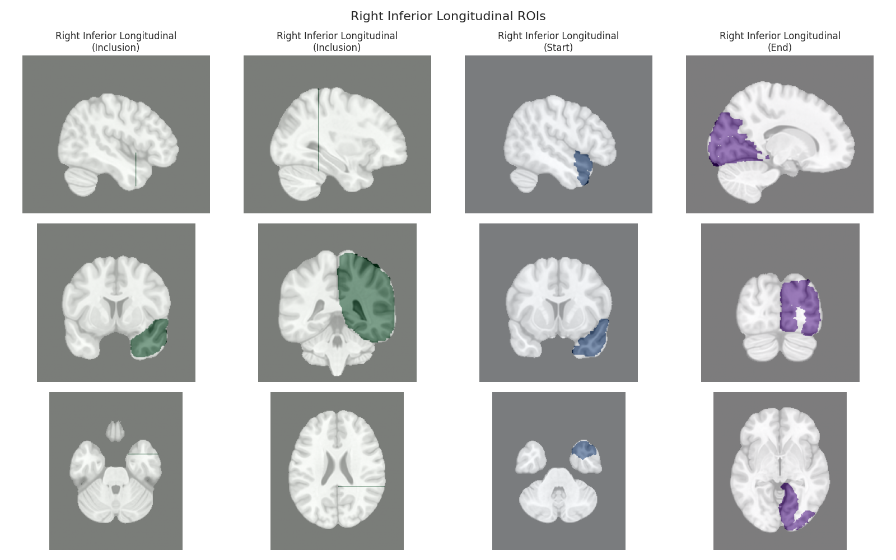
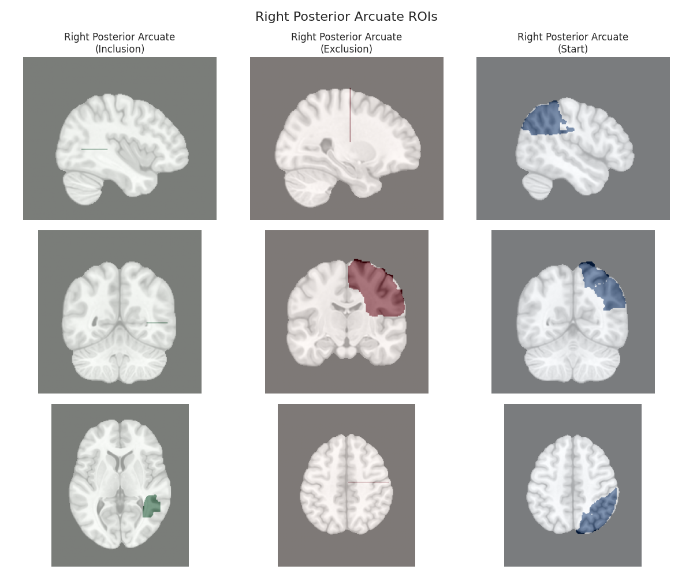

Note
Go to the end to download the full example code.
Plotting Default Regions of Interest (ROIs) to Understand the Tracts#
This script visualizes the default Regions of Interest (ROIs) for the white matter tracts we recognize by default in pyAFQ. It loads predefined tract templates into MNI space, extracts inclusion, exclusion, start, and end ROIs from the tracts, and generates multi-panel figures showing sagittal, coronal, and axial views of these ROIs overlaid on the MNI template T1w brain.
The visualization helps understand the spatial relationships between tracts and their defining ROIs.
Import libraries, load the defautl tract templates
import numpy as np
import matplotlib
matplotlib.use('Agg') # Use Agg backend for headless plotting
import matplotlib.pyplot as plt
import AFQ.data.fetch as afd
import AFQ.api.bundle_dict as abd
templates = abd.default18_bd() + abd.callosal_bd()
Define a function to visualize ROIs for a specific tract
def visualize_tract_rois(tract_name):
"""
Visualize ROIs for a specific tract overlaid on the template brain.
Parameters
----------
tract_name : str
Name of the tract
Returns
-------
fig : matplotlib figure
Figure with the visualization
"""
# Get the template brain
template_brain = afd.read_mni_template(
resolution=1, mask=True, weight="T1w")
template_data = template_brain.get_fdata()
figures = []
# Get the ROIs for this tract and hemisphere
if tract_name not in templates:
raise ValueError(f"Tract {tract_name} not found in templates.")
bundle_info = templates[tract_name]
# Collect all ROIs with their roles
all_roi_images = []
# Add include ROIs
if 'include' in bundle_info:
all_roi_images.extend([
(image, "Inclusion") for image in bundle_info['include']])
# Add exclude ROIs
if 'exclude' in bundle_info:
all_roi_images.extend([
(image, "Exclusion") for image in bundle_info['exclude']])
# Add start ROIs
if 'start' in bundle_info:
all_roi_images.append((bundle_info["start"], "Start"))
# Add end ROIs
if 'end' in bundle_info:
all_roi_images.append((bundle_info["end"], "End"))
if not all_roi_images:
raise ValueError(f"No ROIs found for tract {tract_name}")
# Create a figure
fig, axes = plt.subplots(3,
len(all_roi_images),
figsize=(len(all_roi_images) * 4, 10))
fig.suptitle(f"{tract_name} ROIs", fontsize=16)
# Handle case with just one ROI
if len(all_roi_images) == 1:
axes = np.array([axes]).reshape(3, 1)
# Get dimensions
x, y, z = template_data.shape
mid_x, mid_y, mid_z = x // 2, y // 2, z // 2
# Function to get slice index with maximum ROI coverage
def get_max_slice(roi_img, axis=0):
roi_data = roi_img.get_fdata()
if axis == 0: # Sagittal
sums = np.sum(roi_data, axis=(1, 2))
return np.argmax(sums) if np.any(sums) else mid_x
elif axis == 1: # Coronal
sums = np.sum(roi_data, axis=(0, 2))
return np.argmax(sums) if np.any(sums) else mid_y
else: # Axial
sums = np.sum(roi_data, axis=(0, 1))
return np.argmax(sums) if np.any(sums) else mid_z
# Color mapping for different ROI types
roi_type_colors = {
"Inclusion": 'Greens',
"Exclusion": 'Reds',
"Start": 'Blues',
"End": 'Purples'
}
# Find best slices for each ROI individually
for i, (roi_img, roi_type_name) in enumerate(all_roi_images):
roi_data = roi_img.get_fdata()
# Get best slices for this ROI
best_x = get_max_slice(roi_img, axis=0)
best_y = get_max_slice(roi_img, axis=1)
best_z = get_max_slice(roi_img, axis=2)
# Assign color based on ROI type
roi_color = roi_type_colors[roi_type_name]
# Plot sagittal view (first row)
ax = axes[0, i]
ax.imshow(np.rot90(template_data[best_x, :, :]), cmap='gray')
mask = np.rot90(roi_data[best_x, :, :])
ax.imshow(mask, alpha=0.5, cmap=roi_color)
if i == 0:
ax.set_ylabel('Sagittal')
ax.set_title(f"{tract_name}\n({roi_type_name})")
# Plot coronal view (second row)
ax = axes[1, i]
ax.imshow(np.rot90(template_data[:, best_y, :]), cmap='gray')
mask = np.rot90(roi_data[:, best_y, :])
ax.imshow(mask, alpha=0.5, cmap=roi_color)
if i == 0:
ax.set_ylabel('Coronal')
# Plot axial view (third row)
ax = axes[2, i]
ax.imshow(np.rot90(template_data[:, :, best_z]), cmap='gray')
mask = np.rot90(roi_data[:, :, best_z])
ax.imshow(mask, alpha=0.5, cmap=roi_color)
if i == 0:
ax.set_ylabel('Axial')
# Turn off axes for cleaner look
for row in axes:
for ax in row:
ax.axis('off')
plt.tight_layout()
figures.append(fig)
return figures
Create visualization for each tract
for bundle_name in templates.bundle_names:
print(f"Visualizing ROIs for tract: {bundle_name}")
figs = visualize_tract_rois(bundle_name)
for ii, fig in enumerate(figs):
fig.savefig(f"{bundle_name}_{ii}.png")
plt.close(fig)

- 
- 
Visualizing ROIs for tract: Left Anterior Thalamic
Visualizing ROIs for tract: Right Anterior Thalamic
Visualizing ROIs for tract: Left Cingulum Cingulate
Visualizing ROIs for tract: Right Cingulum Cingulate
Visualizing ROIs for tract: Left Corticospinal
Visualizing ROIs for tract: Right Corticospinal
Visualizing ROIs for tract: Left Inferior Fronto-occipital
Visualizing ROIs for tract: Right Inferior Fronto-occipital
Visualizing ROIs for tract: Left Inferior Longitudinal
Visualizing ROIs for tract: Right Inferior Longitudinal
Visualizing ROIs for tract: Left Superior Longitudinal
Visualizing ROIs for tract: Right Superior Longitudinal
Visualizing ROIs for tract: Left Arcuate
Visualizing ROIs for tract: Right Arcuate
Visualizing ROIs for tract: Left Uncinate
Visualizing ROIs for tract: Right Uncinate
Visualizing ROIs for tract: Left Posterior Arcuate
Visualizing ROIs for tract: Right Posterior Arcuate
Visualizing ROIs for tract: Left Vertical Occipital
Visualizing ROIs for tract: Right Vertical Occipital
Visualizing ROIs for tract: Callosum Anterior Frontal
Visualizing ROIs for tract: Callosum Motor
Visualizing ROIs for tract: Callosum Occipital
Visualizing ROIs for tract: Callosum Orbital
Visualizing ROIs for tract: Callosum Posterior Parietal
Visualizing ROIs for tract: Callosum Superior Frontal
Visualizing ROIs for tract: Callosum Superior Parietal
Visualizing ROIs for tract: Callosum Temporal
Total running time of the script: (1 minutes 49.829 seconds)
Estimated memory usage: 429 MB